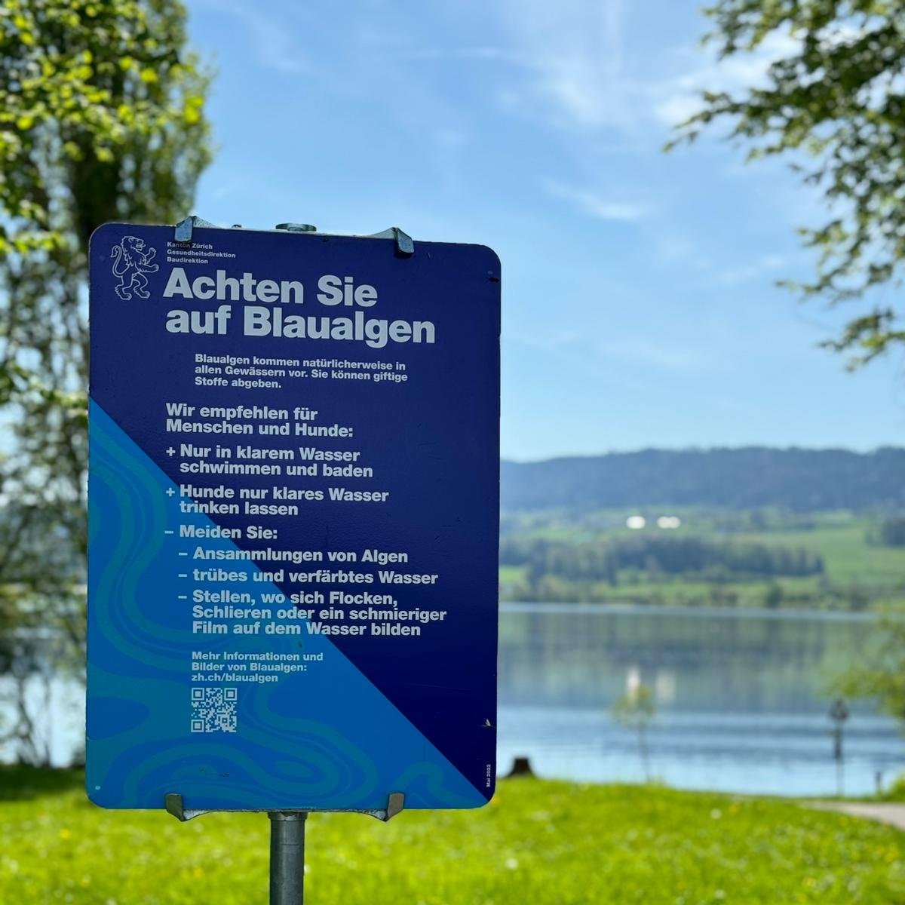
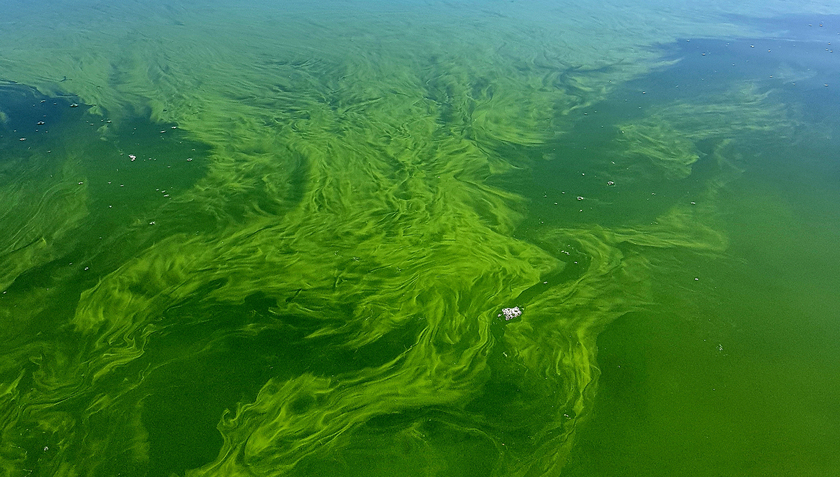
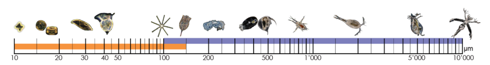

The surface of a lake can appear completely calm and silent. Yet under the water and the right conditions, something invisible can shift.
Certain microscopic organisms multiply rapidly and rise to the surface, forming a visible greenish film or mat across the water.
These blooms can be toxic to animals and humans alike, making the lake unsafe for swimming.

@Stadtpolizei Uster

@Eawag, Francesco Pomati
Warning sign (click to enlarge) and algae bloom at Lake Greifensee.
At the same time, the organisms responsible for these warnings are not merely a hazard. They are the very foundation on which the entire lake ecosystem depends.
Small organisms, large influence
Those blooms are visible from the shore. But the individual organisms that cause them are not. Beneath the surface,
countless microscopic life forms drift through the water column, so small that they are almost invisible to the naked eye. These drifting organisms are plankton.
Phytoplankton are mostly single-celled, photosynthetic organisms that use sunlight and carbon dioxide to produce energy.
In doing so, they generate oxygen and form the base of the aquatic food web.
Zooplankton feed on phytoplankton, grazing on algae and regulating their population growth. In this way, they connect microscopic plant life
to larger organisms in the lake such as fish.
Among the phytoplankton are cyanobacteria, the organisms behind that warning sign.
These blooms not only restrict human use of the lake, but can also disrupt the ecosystem itself.
Surface accumulations reduce light penetration, limiting photosynthesis in other phytoplankton.
When a bloom collapses, the decomposition of the cells increases oxygen demand and can lower oxygen levels in the water, potentially shifting the balance of the entire lake ecosystem.
Explore the plankton of Greifensee
Plankton display a striking variety of shapes, structures, and colors, each adapted to life in the water column.
The images below show a selection of plankton species observed in Lake Greifensee. Click on an organism to learn
more about it and its role in the ecosystem. For more images, visit Aquascope Discover Plankton.
As can be seen, the shapes range from star-like organisms to small shrimp-like ones. Individual phytoplankton are invisible without a microscope. Some zooplankton can reach several millimeters and are just visible to the naked eye, though they are easily overlooked in open water.
So how do we know which ones are present at any given time? How can we observe them systematically over time in their natural environment?
Making the small ones measurable
To observe the plankton community systematically, an underwater microscope was installed in Lake Greifensee three meters below the lake surface.
The device records image sequences at regular intervals, capturing organisms directly in their natural environment.
This system is part of the research project Aquascope from Eawag, which enables continuous monitoring of the plankton community.
Microscope magnification
The microscope operates at two magnifications to cover small and large organisms, opening two windows into the water column at different scales.
One can imagine this process like taking a photo of a flock of birds flying across the sky. Depending on the magnification level,
one may either see a single bird in great detail or a larger flock with less detail on each individual. The image below illustrates the observed
plankton with 0.5× (blue) and 5× (orange) magnification.

At low magnification (blue), larger organisms such as zooplankton and larvae are captured across a wide field of view. At high magnification (orange),
microscopic organisms such as single cells and small colonies become visible in much finer detail, although within a smaller observed area. Together,
these complementary views provide a more complete picture of the plankton community.
From image to data point
Each magnification captures images at regular intervals. Within each image, individual plankton organisms or colonies are detected automatically.
Over time, these individual snapshots accumulate into a time series. In the example below, one can see the original picture taken by the microscope
and all detected organisms. These are then counted and classified to create the time series. As a unit, scientists use "Regions of Interest" (ROIs)
over the observed time. Use the time slider below to step through individual images to see how the count depends on the sampling time.
after 1 secafter 1 minafter 1 hourafter 12 hoursafter 1 day
The resulting timeline
All the observations are then aggregated into a time series, as a single detection is insufficient on its own. Thousands of them, accumulated over months, begin to reveal more about
the ecosystem of the lake. The timeline below shows the concentration of cyanobacteria over a one-year period.
One can see clear seasonal patterns, with concentrations rising in the warmer months and falling back in winter.
The data show continuous biological activity beneath the surface.
In the timeline above, selecting cyanobacteria at both magnifications shows how differently the same organism appears at each scale. The samples shown are only a small part of the overall dataset, yet they illustrate how continuous monitoring can track the dynamics of plankton populations.
A look into the ecosystem of a lake
Since 2018, Project Aquascope has continuously recorded plankton images at Greifensee, day and night. Since 2022, the same system has also been operating at Lake Zug. Local sensors measuring water temperature, light, and nutrient levels add environmental context. Together, these records from multiple sites give scientists what snapshots cannot: a continuous view of life beneath the surface, driving ongoing research (see publications) into how lake ecosystems work. So even if the water appears still, the plankton community is not.
Sources
Data Dennis, S., Merz, E., Reyes, M., Merkli, S., Baity-Jesi, M., Kyathanahally, S. et al. (2023). Aquascope – Eawag: Swiss Federal Institute of Aquatic Science and Technology. doi:10.25678/000BP4
Eyring, S., Reyes, M., Merz, E., Baity-Jesi, M., Ntetsika, P., Ebi, C., Dennis, S. & Pomati, F. (2025). Five years of high-frequency data of phytoplankton, zooplankton and limnology from a temperate eutrophic lake. Scientific Data, 12, 653. doi:10.1038/s41597-025-04988-9